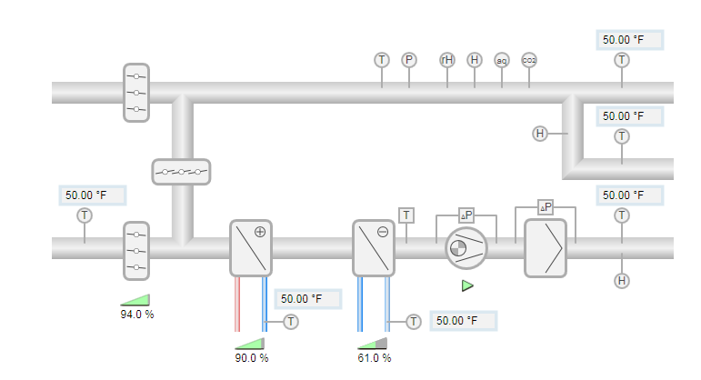
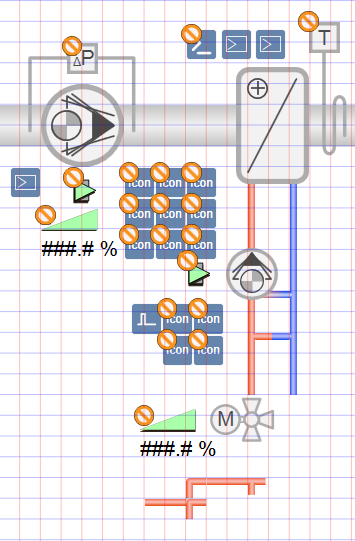
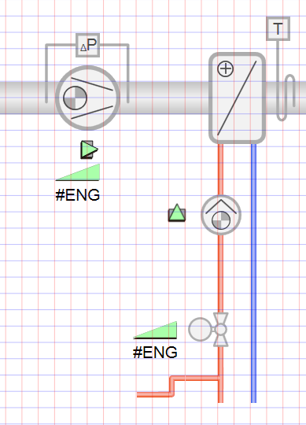
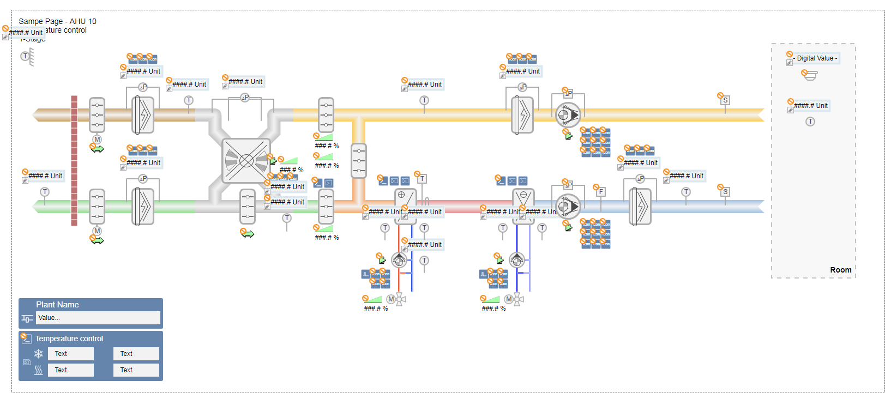

Creating a 2D Ventilation Plant
The following workflows describe how to create a ventilation plant for Desigo. The ventilation plant must be set up in the Desigo library with ABT Site. This optimizes the use of the drag-and-drop functionality for objects on the graphics page while also reducing engineering efforts.

Drawing in Design or Test Mode
A graphics page can be created in the Design or Test mode
or Test mode . We recommend starting to draw a ventilation plant in Design mode, to display objects on the graphic in the proper scale. If you rotate, extend, configure, are assign another color in Test mode, continue in Test mode, since the edited objects are displayed in Design mode in its default state. The graphics page appears only partially engineered (see the Design mode column in the following table).
. We recommend starting to draw a ventilation plant in Design mode, to display objects on the graphic in the proper scale. If you rotate, extend, configure, are assign another color in Test mode, continue in Test mode, since the edited objects are displayed in Design mode in its default state. The graphics page appears only partially engineered (see the Design mode column in the following table).
Comparison of Design and Test Mode | |
Design Mode | Test Mode |
 |  |
Setting Project Properties and Library
- In the Start tab, select the required library from the drop-down list in the Symbol options group.
- All
- 2D
- 2D+
- 3D

NOTE 1:
The setting is not saved and must be entered each time you restart the Graphics Editor.
NOTE 2:
In System Browser, use the Logical View as well to reference objects, since the reference on the associated view is saved in the graphic.
Creating a Graphics Structure
Set the hierarchy for saving graphics pages before starting to create graphics. There are two variants for a folder structure:
- Building > Plant
- Plant > Building
- System Manager is in Engineering mode.
- In System Browser, select Application View.
- Select Applications > Graphics and the tab Graphics.
- Click Create
 and select New Folder.
and select New Folder. - The Create new folder dialog box opens.
- Enter a name in the Name field.
NOTE: The system name is derived automatically from the description. Spaces are replaced by _ (underscore). - Click OK.
- Create additional folders or subfolders as per project requirements.
- The folder structure to save graphics pages is created.

Note:
Graphics pages can be moved afterwards under the Views tab.
Selecting a Pre-defined Graphic
- Desigo Automation import is done.
- System Manager is in Engineering mode.
- In System Browser, select Application View.
- Select Applications > Graphics.
- Click Open .
- Select Project > Libraries > L1-Headquarter > BA (HQ) > Air System (PX) > Sample Graphics.
- The Library Selection dialog box displays.
- In the Names column, select the corresponding graphic [Air System – 013 – AHU H Pattern 2D].
- Click Open.
- The selected graphics page opens.
Note: You must save the graphics page under a new name before making any changes. - Click Save As.
- The Graphics folder is selected in Project.
- Select Project > Graphics > [selected graphics hierarchy].
- Under Name, enter a unique name for the graphics page.
- Click Save.
- The graphics page is saved to folder called Graphics > [selected graphics hierarchy].

Sample Graphic